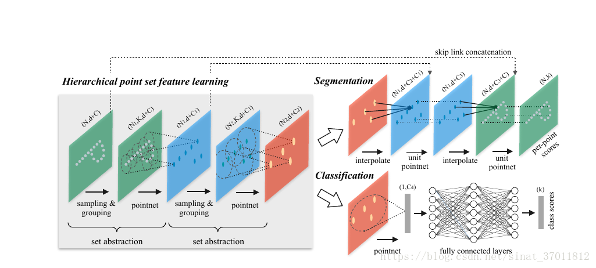
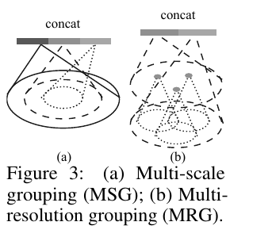
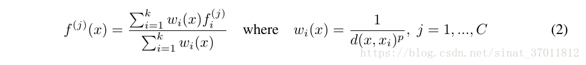

https://blog.csdn.net/sinat_37011812/article/details/81945050
简介
作者在先前的研究中提出Pointnet，此论文是Pointnet的改进版Pointnet++。提出改进的理由是因为Pointnet无法很好地捕捉由度量空间引起的局部结构问题，由此限制了网络对精细场景的识别以及对复杂场景的泛化能力。
Pointnet的基本思想是对输入点云中的每一个点，学习其对应的空间编码，之后再利用所有点的特征得到一个全局的点云特征，这里欠缺了对局部特征的提取及处理，比如说点云空间中临近点一般都具有相近的特征，同属于一个物体空间中的点的概率很大，就好比二维图像中，同一个物体的像素值都相近一样。
再者现实场景中的点云往往是书迷不同的，而Pointnet是基于均匀采样的点云进行训练的，导致了其在实际场景点云中的准确率下降。
Pointnet++就上述提出了改进，解决了两个问题：
- 如何对点云进行局部划分
- 如何对点云进行局部特征提取
上述两个问题其实是相互关联的。
实现细节

层级点云特征学习
点集的特征提取由三部分组成，分别为Sampling layer、Grouping layer、Pointnet layer。
Sampling layer
采样层在输入点云中选择一系列点，由此定义出局部区域的中心。采样算法使用迭代最远点采样方法iterative farthest point sampling（FPS）。
FPS：先随机选择一个点，然后再选择离这个点最远的点作为起点，再继续迭代，知道选出需要的个数为止。
相比随机采样，能更完整的通过区域中心点采样到全局点云
Grouping layer
目的是要构建局部区域，进而提取特征。思想就是利用临近点，并且论文中使用的是neighborhood ball，而不是KNN，是因为可以保证有一个fixed region scale，主要的指标还是距离distance。
Pointnet layer
在如何对点云进行局部特征提取的问题上，利用原有的Pointnet就可以很好的提取点云的特征，由此在Pointnet++中，原先的Pointnet网络就成为了Pointnet++网络中的子网络，层级迭代提取特征。
点云密度不均匀时的鲁棒特征学习
这里作者解决空间中点云的密度不均匀对特征学习带来的挑战，提出了两种grouping的方法，即如何提取不同尺度的局部patterns并按照局部点的密度去组合它们。称为密度自适应层

Multi-scale Grouping
简单而有效的方式，直接对不同密度的点云特征（通过Pointnet提取后的）进行组合
不同密度的点云时通过对输入点云进行不同概率的dropout得到的
问题是计算量比较大
Multi-resolution Grouping
分两部分，一部分直接用Pointnet从raw points上提取特征，另一部分是对subregion使用set abstraction得到的特征的集合。第一部分想当于是一个比较全局的部分，第二部分相当于是一个比较局部的部分，这里用两部分可以很好的控制全局区域密度。当局部区域密度比较小时，说明全局特征没有全局特征可靠，因此可以增加全局特征的权重。反之也是如此。这就相当于权重可以在密度的变化之中可以被学习到。
Segmentation
在网络中输入不断被降采样而在segmentation中label都是针对原始点的，相当于需要做一个upsampling的动作。作者使用插值的方法再和之前的set abstraction中的feature做一个concatenate，inverse distance weighted average based on k nearest neighbors

结论
Pointnet++的结构在3D point clouds上取得了state of art的水平，解决了如何处理采样不均匀的问题，也考虑了空间中点与点之间的距离度量，通过层级结构利用局部区域信息学习特征，网络结构更有效更鲁棒。